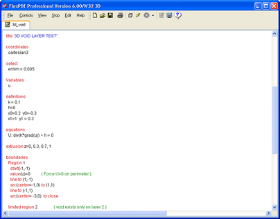
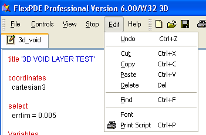

|
Editing Descriptor Files |

  
|
|
Editing Descriptor Files |
|
A FlexPDE problem descriptor file is a complete description of the PDE modeling problem. It describes the system of partial differential equations, the parameters and boundary conditions used in the solution, the domain of the problem, and the graphical output to generate. See the section "User Guide" for a tutorial on the use of FlexPDE problem descriptors. See the section "Problem Descriptor Reference" for a complete description of the format and content of the descriptor file.
You can open a descriptor file in either of two ways: 1) by running FlexPDE from the desktop icon or from your file manager program, and then following the "File|Open" menu sequence; or 2) if an association of FlexPDE with the ".pde" extension has been made, either automatically in Windows or manually in other operating systems, you can double-click on the .pde file in your file manager. In either case, the descriptor file will be opened, a new tab will be created, and an edit window will appear.
For example, suppose we follow the "Open" sequence to the "Samples | Misc | 3D_domains" folder and select "3d_void.pde". The newly opened problem file will be recorded in a tab along the top of the window, allowing it to be selected if a number of scripts are open simultaneously.
The Edit window appears as follows:

This is a standard NOTEPAD-type editing window, showing the contents of the selected descriptor. You can scroll and edit in the usual way. FlexPDE keywords are highlighted in red, comments in green, and text strings in blue.
The "Edit" item in the main menu contains the editing functions:

The menu items have the conventional meanings, and the control key equivalents are shown.
The Find, Font and Print items have the following use:
Find
This item allows you to search the file for occurrences of a string. The search will find imbedded patterns, not just full words.
Font
This item allows you to select the display font for the editor. Your selection will be recorded and used in subsequent FlexPDE sessions.
Print Script
Prints the descriptor file to a configured printer.
In addition to the main menu Edit item, you can right-click the text window to bring up the same editing menu.
At any time, you can click "File | Save" or "File |Save_As..." in the main menu to save your work before proceeding.
Now click "Domain Review" or "Run Script" in the Controls menu, and your problem will begin execution.
The file will be automatically saved in the currently open file, so if you wish to retain the unedited file, you must use "Save_As" before "Run".
Note: The FlexPDE script editor is a "programming" editor, not a word processor. There are no sophisticated facilities for text manipulation.
Page url: index.html?editing.html